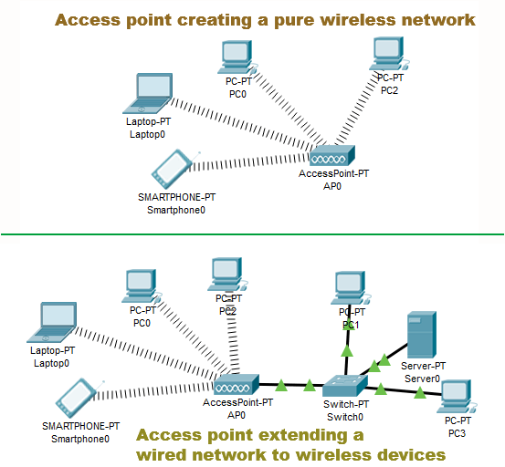

Recently, after adding many IoT devices around the house, I have noticed some devices have poor signal strength when they are too far away from the router. This wasn't a huge issue, but some of the events I have scheduled don't always run because the connection is too weak.
I thought about just buying an Access Point that I could connect to the router, but I would prefer a POE [Power of Ethernet] access point, but my router does not currently have a POE port.
I did, however, find the router that I recently replaced but still works. I connected this router to my main router With a wired ethernet connection there is no bandwidth reduction.
This new access point now allows all of the IoT devices in the living room and kitchen to have much better signal strength. This was then tested by executing some of the events I had set up that needed better signal to fully run.